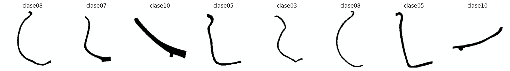
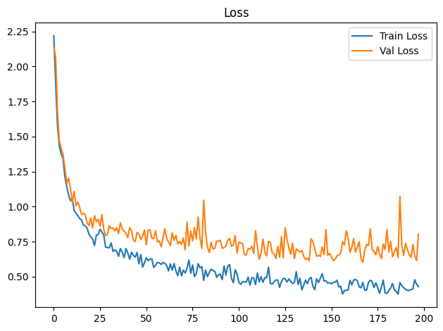
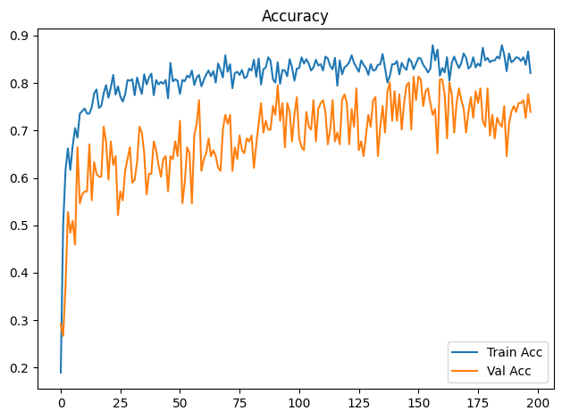
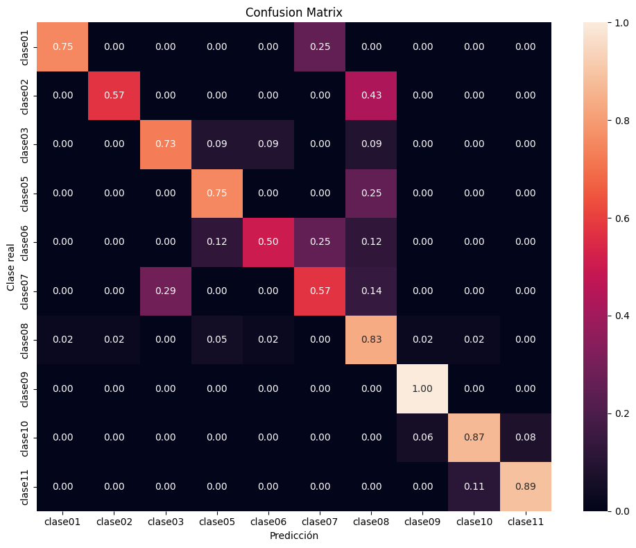

Dispositivo utilizado para procesamiento: CUDA - NVIDIA GeForce GTX 1650Entrenamiento de CNN ResNet-18 con Transfer Learning
Objetivos
- Construir un modelo baseline de clasificación mediante transfer learning con ResNet18 preentrenada.
- Entrenar inicialmente solo la capa clasificadora y descongelar
layer4enUNFREEZE_EPOCHcon una tasa de aprendizaje menor. - Aplicar transformaciones y aumentación de datos al conjunto de entrenamiento.
- Entrenar y validar el modelo registrando loss y accuracy por época.
- Detener el entrenamiento si val_loss no mejora suficientemente durante la paciencia configurada.
- Evaluar el modelo de la mejor época de validación sobre el conjunto de prueba.
- Analizar los resultados mediante accuracy, precision, recall, F1-score, reporte de clasificación y matriz de confusión normalizada.
- Guardar los pesos restaurados de la mejor época de validación (o los finales si se desactiva la parada anticipada).
Dispositivo para procesamiento
División de datos
La pertenencia de cada imagen a train, val o test se lee de la metadata generada por el notebook de división. La relación se realiza mediante ruta_relativa; por tanto, el split no se recalcula aunque cambien la semilla o los parámetros del entrenamiento.
Dataset seleccionado: completos
Directorio de datos: /home/rafael/Dev/vasijas/data/10.cuadrados_divididos_en_train_val_y_test
Metadata de split: data/10.cuadrados_divididos_en_train_val_y_test/metadata.csv
Clases: clase01 clase02 clase03 clase05 clase06 clase07 clase08 clase09 clase10 clase11
Split persistido -> train: 749, val: 161, test: 161
Conteo train por clase: [18, 32, 50, 39, 36, 34, 196, 14, 248, 82]
Pesos de clase: [4.161, 2.341, 1.498, 1.921, 2.081, 2.203, 0.382, 5.35, 0.302, 0.913]Epoch 1/300
Train Loss: 2.2194 | Train Acc: 0.1896 | Val Loss: 2.1420 | Val Acc: 0.2919
Tiempo de epoch: 0:00:10.089870
Epoch 2/300
Train Loss: 1.8876 | Train Acc: 0.5007 | Val Loss: 2.0673 | Val Acc: 0.2671
Tiempo de epoch: 0:00:05.880087
Epoch 3/300
Train Loss: 1.5785 | Train Acc: 0.6168 | Val Loss: 1.6789 | Val Acc: 0.3727
Tiempo de epoch: 0:00:05.820132
Epoch 4/300
Train Loss: 1.4309 | Train Acc: 0.6622 | Val Loss: 1.4665 | Val Acc: 0.5280
Tiempo de epoch: 0:00:05.823546
Epoch 5/300
Train Loss: 1.3746 | Train Acc: 0.6168 | Val Loss: 1.4175 | Val Acc: 0.4845
Tiempo de epoch: 0:00:05.835485
Epoch 6/300
Train Loss: 1.3453 | Train Acc: 0.6676 | Val Loss: 1.3732 | Val Acc: 0.5093
Tiempo de epoch: 0:00:05.759720
Epoch 7/300
Train Loss: 1.2118 | Train Acc: 0.7049 | Val Loss: 1.2770 | Val Acc: 0.4596
Tiempo de epoch: 0:00:05.697235
Epoch 8/300
Train Loss: 1.1434 | Train Acc: 0.6849 | Val Loss: 1.1652 | Val Acc: 0.6646
Tiempo de epoch: 0:00:05.832336
Epoch 9/300
Train Loss: 1.0824 | Train Acc: 0.7356 | Val Loss: 1.2029 | Val Acc: 0.5466
Tiempo de epoch: 0:00:05.710721
Epoch 10/300
Train Loss: 1.0423 | Train Acc: 0.7410 | Val Loss: 1.1307 | Val Acc: 0.5652
Tiempo de epoch: 0:00:05.673757
Epoch 11/300
Train Loss: 1.0573 | Train Acc: 0.7463 | Val Loss: 1.0287 | Val Acc: 0.5714
Tiempo de epoch: 0:00:05.817808
Epoch 12/300
Train Loss: 0.9743 | Train Acc: 0.7356 | Val Loss: 1.1090 | Val Acc: 0.5714
Tiempo de epoch: 0:00:05.701831
Epoch 13/300
Train Loss: 0.9520 | Train Acc: 0.7356 | Val Loss: 1.0055 | Val Acc: 0.6708
Tiempo de epoch: 0:00:05.849672
Epoch 14/300
Train Loss: 0.9362 | Train Acc: 0.7490 | Val Loss: 1.0330 | Val Acc: 0.5528
Tiempo de epoch: 0:00:05.883822
Epoch 15/300
Train Loss: 0.9149 | Train Acc: 0.7784 | Val Loss: 0.9951 | Val Acc: 0.6335
Tiempo de epoch: 0:00:05.995519
Epoch 16/300
Train Loss: 0.9044 | Train Acc: 0.7864 | Val Loss: 0.9423 | Val Acc: 0.6087
Tiempo de epoch: 0:00:05.864547
Epoch 17/300
Train Loss: 0.8690 | Train Acc: 0.7477 | Val Loss: 0.9509 | Val Acc: 0.6025
Tiempo de epoch: 0:00:05.751342
Epoch 18/300
Train Loss: 0.8623 | Train Acc: 0.7517 | Val Loss: 0.9422 | Val Acc: 0.6025
Tiempo de epoch: 0:00:05.729253
Epoch 19/300
Train Loss: 0.8467 | Train Acc: 0.7784 | Val Loss: 0.8836 | Val Acc: 0.7081
Tiempo de epoch: 0:00:05.732858
Epoch 20/300
Train Loss: 0.8045 | Train Acc: 0.7957 | Val Loss: 0.8641 | Val Acc: 0.6770
Tiempo de epoch: 0:00:05.913735
Epoch 21/300
Train Loss: 0.7842 | Train Acc: 0.7690 | Val Loss: 0.9206 | Val Acc: 0.5963
Tiempo de epoch: 0:00:05.637418
Epoch 22/300
Train Loss: 0.7687 | Train Acc: 0.7904 | Val Loss: 0.8480 | Val Acc: 0.6770
Tiempo de epoch: 0:00:05.817572
Epoch 23/300
Train Loss: 0.7223 | Train Acc: 0.8171 | Val Loss: 0.9348 | Val Acc: 0.6273
Tiempo de epoch: 0:00:05.831462
Epoch 24/300
Train Loss: 0.7966 | Train Acc: 0.7757 | Val Loss: 0.8915 | Val Acc: 0.6460
Tiempo de epoch: 0:00:05.761400
Epoch 25/300
Train Loss: 0.8018 | Train Acc: 0.7931 | Val Loss: 0.9100 | Val Acc: 0.5217
Tiempo de epoch: 0:00:05.754584
Epoch 26/300
Train Loss: 0.8388 | Train Acc: 0.7717 | Val Loss: 0.8610 | Val Acc: 0.5714
Tiempo de epoch: 0:00:05.940239
Epoch 27/300
Train Loss: 0.8177 | Train Acc: 0.7610 | Val Loss: 0.9429 | Val Acc: 0.5528
Tiempo de epoch: 0:00:05.977470
Epoch 28/300
Train Loss: 0.7967 | Train Acc: 0.7757 | Val Loss: 0.8370 | Val Acc: 0.6149
Tiempo de epoch: 0:00:05.762672
Epoch 29/300
Train Loss: 0.7108 | Train Acc: 0.8064 | Val Loss: 0.7919 | Val Acc: 0.6398
Tiempo de epoch: 0:00:05.944001
Epoch 30/300
Train Loss: 0.7082 | Train Acc: 0.8051 | Val Loss: 0.8022 | Val Acc: 0.6646
Tiempo de epoch: 0:00:05.775220
Epoch 31/300
Train Loss: 0.7063 | Train Acc: 0.8077 | Val Loss: 0.8646 | Val Acc: 0.5901
Tiempo de epoch: 0:00:05.924392
Epoch 32/300
Train Loss: 0.7408 | Train Acc: 0.7744 | Val Loss: 0.8444 | Val Acc: 0.5963
Tiempo de epoch: 0:00:05.825288
Epoch 33/300
Train Loss: 0.6805 | Train Acc: 0.8117 | Val Loss: 0.8476 | Val Acc: 0.6335
Tiempo de epoch: 0:00:05.799512
Epoch 34/300
Train Loss: 0.6922 | Train Acc: 0.7931 | Val Loss: 0.8262 | Val Acc: 0.7081
Tiempo de epoch: 0:00:05.905024
Epoch 35/300
Train Loss: 0.6804 | Train Acc: 0.7770 | Val Loss: 0.8500 | Val Acc: 0.6957
Tiempo de epoch: 0:00:05.656172
Epoch 36/300
Train Loss: 0.6453 | Train Acc: 0.8184 | Val Loss: 0.8072 | Val Acc: 0.6522
Tiempo de epoch: 0:00:05.758705
Epoch 37/300
Train Loss: 0.7008 | Train Acc: 0.7971 | Val Loss: 0.8839 | Val Acc: 0.5652
Tiempo de epoch: 0:00:05.695404
Epoch 38/300
Train Loss: 0.6753 | Train Acc: 0.8117 | Val Loss: 0.8409 | Val Acc: 0.6087
Tiempo de epoch: 0:00:05.849951
Epoch 39/300
Train Loss: 0.6357 | Train Acc: 0.8198 | Val Loss: 0.8260 | Val Acc: 0.6087
Tiempo de epoch: 0:00:05.911042
Epoch 40/300
Train Loss: 0.7013 | Train Acc: 0.7744 | Val Loss: 0.8128 | Val Acc: 0.6770
Tiempo de epoch: 0:00:05.851253
Epoch 41/300
Train Loss: 0.6686 | Train Acc: 0.8064 | Val Loss: 0.7782 | Val Acc: 0.6584
Tiempo de epoch: 0:00:05.727739
Epoch 42/300
Train Loss: 0.6246 | Train Acc: 0.7971 | Val Loss: 0.8500 | Val Acc: 0.6273
Tiempo de epoch: 0:00:05.735060
Epoch 43/300
Train Loss: 0.6745 | Train Acc: 0.8024 | Val Loss: 0.8271 | Val Acc: 0.6025
Tiempo de epoch: 0:00:05.765960
Epoch 44/300
Train Loss: 0.6536 | Train Acc: 0.7984 | Val Loss: 0.7597 | Val Acc: 0.6398
Tiempo de epoch: 0:00:05.875731
Epoch 45/300
Train Loss: 0.6395 | Train Acc: 0.8064 | Val Loss: 0.7505 | Val Acc: 0.6460
Tiempo de epoch: 0:00:05.786816
Epoch 46/300
Train Loss: 0.6732 | Train Acc: 0.7677 | Val Loss: 0.8162 | Val Acc: 0.5714
Tiempo de epoch: 0:00:05.869785
Epoch 47/300
Train Loss: 0.5918 | Train Acc: 0.8425 | Val Loss: 0.8041 | Val Acc: 0.6460
Tiempo de epoch: 0:00:05.739158
Epoch 48/300
Train Loss: 0.6581 | Train Acc: 0.8037 | Val Loss: 0.7664 | Val Acc: 0.6398
Tiempo de epoch: 0:00:05.693111
Epoch 49/300
Train Loss: 0.5688 | Train Acc: 0.8077 | Val Loss: 0.7903 | Val Acc: 0.6770
Tiempo de epoch: 0:00:05.878427
Epoch 50/300
Train Loss: 0.5997 | Train Acc: 0.8051 | Val Loss: 0.8323 | Val Acc: 0.6460
Tiempo de epoch: 0:00:05.776094
Epoch 51/300
Train Loss: 0.6349 | Train Acc: 0.7770 | Val Loss: 0.7282 | Val Acc: 0.7205
Tiempo de epoch: 0:00:05.783073
Epoch 52/300
Train Loss: 0.6142 | Train Acc: 0.8064 | Val Loss: 0.8328 | Val Acc: 0.5466
Tiempo de epoch: 0:00:05.724954
Epoch 53/300
Train Loss: 0.6268 | Train Acc: 0.8037 | Val Loss: 0.8348 | Val Acc: 0.5901
Tiempo de epoch: 0:00:05.682696
Epoch 54/300
Train Loss: 0.6272 | Train Acc: 0.8158 | Val Loss: 0.7736 | Val Acc: 0.6646
Tiempo de epoch: 0:00:05.938581
Epoch 55/300
Train Loss: 0.5658 | Train Acc: 0.8117 | Val Loss: 0.7722 | Val Acc: 0.6522
Tiempo de epoch: 0:00:05.793275
Epoch 56/300
Train Loss: 0.5824 | Train Acc: 0.8264 | Val Loss: 0.8292 | Val Acc: 0.5466
Tiempo de epoch: 0:00:05.879995
Epoch 57/300
Train Loss: 0.6021 | Train Acc: 0.7957 | Val Loss: 0.7476 | Val Acc: 0.6894
Tiempo de epoch: 0:00:05.729039
Epoch 58/300
Train Loss: 0.5987 | Train Acc: 0.8117 | Val Loss: 0.7558 | Val Acc: 0.7143
Tiempo de epoch: 0:00:05.877822
Epoch 59/300
Train Loss: 0.5873 | Train Acc: 0.8171 | Val Loss: 0.7133 | Val Acc: 0.7640
Tiempo de epoch: 0:00:05.755807
Epoch 60/300
Train Loss: 0.6014 | Train Acc: 0.7931 | Val Loss: 0.7787 | Val Acc: 0.6149
Tiempo de epoch: 0:00:05.779131
Epoch 61/300
Train Loss: 0.5951 | Train Acc: 0.8064 | Val Loss: 0.8421 | Val Acc: 0.6398
Tiempo de epoch: 0:00:05.956601
Epoch 62/300
Train Loss: 0.5805 | Train Acc: 0.8184 | Val Loss: 0.7754 | Val Acc: 0.6522
Tiempo de epoch: 0:00:05.771186
Epoch 63/300
Train Loss: 0.5412 | Train Acc: 0.8264 | Val Loss: 0.7478 | Val Acc: 0.6832
Tiempo de epoch: 0:00:05.934149
Epoch 64/300
Train Loss: 0.5917 | Train Acc: 0.8144 | Val Loss: 0.7225 | Val Acc: 0.6460
Tiempo de epoch: 0:00:05.781781
Epoch 65/300
Train Loss: 0.5458 | Train Acc: 0.8251 | Val Loss: 0.8132 | Val Acc: 0.6584
Tiempo de epoch: 0:00:05.752670
Epoch 66/300
Train Loss: 0.5946 | Train Acc: 0.8011 | Val Loss: 0.7596 | Val Acc: 0.6460
Tiempo de epoch: 0:00:06.022496
Epoch 67/300
Train Loss: 0.5402 | Train Acc: 0.8411 | Val Loss: 0.7953 | Val Acc: 0.6211
Tiempo de epoch: 0:00:05.787398
Epoch 68/300
Train Loss: 0.5068 | Train Acc: 0.8278 | Val Loss: 0.7343 | Val Acc: 0.6149
Tiempo de epoch: 0:00:05.745376
Epoch 69/300
Train Loss: 0.5685 | Train Acc: 0.8117 | Val Loss: 0.7516 | Val Acc: 0.7019
Tiempo de epoch: 0:00:05.882523
Epoch 70/300
Train Loss: 0.5059 | Train Acc: 0.8585 | Val Loss: 0.7304 | Val Acc: 0.7329
Tiempo de epoch: 0:00:05.876939
Epoch 71/300
Train Loss: 0.5468 | Train Acc: 0.8238 | Val Loss: 0.7760 | Val Acc: 0.7143
Tiempo de epoch: 0:00:05.974789
Epoch 72/300
Train Loss: 0.5263 | Train Acc: 0.8398 | Val Loss: 0.6917 | Val Acc: 0.7329
Tiempo de epoch: 0:00:05.809166
Epoch 73/300
Train Loss: 0.5608 | Train Acc: 0.7891 | Val Loss: 0.8884 | Val Acc: 0.6149
Tiempo de epoch: 0:00:05.834473
Epoch 74/300
Train Loss: 0.6187 | Train Acc: 0.8211 | Val Loss: 0.7194 | Val Acc: 0.6646
Tiempo de epoch: 0:00:05.958239
Epoch 75/300
Train Loss: 0.5239 | Train Acc: 0.8238 | Val Loss: 0.8258 | Val Acc: 0.6398
Tiempo de epoch: 0:00:05.820791
Epoch 76/300
Train Loss: 0.5836 | Train Acc: 0.8171 | Val Loss: 0.7552 | Val Acc: 0.6894
Tiempo de epoch: 0:00:06.038764
Epoch 77/300
Train Loss: 0.5012 | Train Acc: 0.8278 | Val Loss: 0.8500 | Val Acc: 0.6584
Tiempo de epoch: 0:00:05.808151
Epoch 78/300
Train Loss: 0.5209 | Train Acc: 0.8104 | Val Loss: 0.7690 | Val Acc: 0.6522
Tiempo de epoch: 0:00:05.790352
Epoch 79/300
Train Loss: 0.5931 | Train Acc: 0.8131 | Val Loss: 0.9251 | Val Acc: 0.6832
Tiempo de epoch: 0:00:05.922711
Epoch 80/300
Train Loss: 0.5636 | Train Acc: 0.8304 | Val Loss: 0.7764 | Val Acc: 0.6770
Tiempo de epoch: 0:00:05.737884
Epoch 81/300
Train Loss: 0.5719 | Train Acc: 0.8264 | Val Loss: 0.7022 | Val Acc: 0.6894
Tiempo de epoch: 0:00:05.710017
Epoch 82/300
Train Loss: 0.4733 | Train Acc: 0.8491 | Val Loss: 1.0456 | Val Acc: 0.6211
Tiempo de epoch: 0:00:05.880217
Epoch 83/300
Train Loss: 0.5477 | Train Acc: 0.8131 | Val Loss: 0.8169 | Val Acc: 0.6708
Tiempo de epoch: 0:00:05.850532
Epoch 84/300
Train Loss: 0.5009 | Train Acc: 0.8518 | Val Loss: 0.7120 | Val Acc: 0.7143
Tiempo de epoch: 0:00:05.791551
Epoch 85/300
Train Loss: 0.5294 | Train Acc: 0.7971 | Val Loss: 0.6717 | Val Acc: 0.7578
Tiempo de epoch: 0:00:05.899553
Epoch 86/300
Train Loss: 0.5536 | Train Acc: 0.8291 | Val Loss: 0.7452 | Val Acc: 0.6957
Tiempo de epoch: 0:00:05.745811
Epoch 87/300
Train Loss: 0.5434 | Train Acc: 0.8331 | Val Loss: 0.6985 | Val Acc: 0.7205
Tiempo de epoch: 0:00:05.791820
Epoch 88/300
Train Loss: 0.5390 | Train Acc: 0.8545 | Val Loss: 0.7018 | Val Acc: 0.7019
Tiempo de epoch: 0:00:05.779423
Epoch 89/300
Train Loss: 0.4958 | Train Acc: 0.8465 | Val Loss: 0.7557 | Val Acc: 0.7019
Tiempo de epoch: 0:00:06.037725
Epoch 90/300
Train Loss: 0.5135 | Train Acc: 0.8077 | Val Loss: 0.7521 | Val Acc: 0.7516
Tiempo de epoch: 0:00:05.802113
Epoch 91/300
Train Loss: 0.5177 | Train Acc: 0.8011 | Val Loss: 0.7596 | Val Acc: 0.7329
Tiempo de epoch: 0:00:05.968197
Epoch 92/300
Train Loss: 0.4792 | Train Acc: 0.8438 | Val Loss: 0.7021 | Val Acc: 0.7950
Tiempo de epoch: 0:00:05.661294
Epoch 93/300
Train Loss: 0.5770 | Train Acc: 0.7984 | Val Loss: 0.7089 | Val Acc: 0.7205
Tiempo de epoch: 0:00:05.775168
Epoch 94/300
Train Loss: 0.5120 | Train Acc: 0.8278 | Val Loss: 0.7170 | Val Acc: 0.7578
Tiempo de epoch: 0:00:05.853651
Epoch 95/300
Train Loss: 0.5751 | Train Acc: 0.8264 | Val Loss: 0.7609 | Val Acc: 0.6646
Tiempo de epoch: 0:00:05.723511
Epoch 96/300
Train Loss: 0.5868 | Train Acc: 0.8144 | Val Loss: 0.7729 | Val Acc: 0.7578
Tiempo de epoch: 0:00:05.810120
Epoch 97/300
Train Loss: 0.4891 | Train Acc: 0.8505 | Val Loss: 0.7172 | Val Acc: 0.7391
Tiempo de epoch: 0:00:05.694937
Epoch 98/300
Train Loss: 0.4570 | Train Acc: 0.8331 | Val Loss: 0.7258 | Val Acc: 0.6770
Tiempo de epoch: 0:00:05.818488
Epoch 99/300
Train Loss: 0.5499 | Train Acc: 0.8051 | Val Loss: 0.7925 | Val Acc: 0.7329
Tiempo de epoch: 0:00:05.807704
Epoch 100/300
Train Loss: 0.5205 | Train Acc: 0.8304 | Val Loss: 0.6681 | Val Acc: 0.7702
Tiempo de epoch: 0:00:05.782394
Epoch 101/300
Train Loss: 0.4596 | Train Acc: 0.8318 | Val Loss: 0.7470 | Val Acc: 0.6832
Tiempo de epoch: 0:00:05.864627
Epoch 102/300
Train Loss: 0.4457 | Train Acc: 0.8545 | Val Loss: 0.7404 | Val Acc: 0.6646
Tiempo de epoch: 0:00:05.770552
Epoch 103/300
Train Loss: 0.4659 | Train Acc: 0.8411 | Val Loss: 0.7383 | Val Acc: 0.6584
Tiempo de epoch: 0:00:05.763284
Epoch 104/300
Train Loss: 0.4616 | Train Acc: 0.8505 | Val Loss: 0.6566 | Val Acc: 0.7391
Tiempo de epoch: 0:00:05.822247
Epoch 105/300
Train Loss: 0.4635 | Train Acc: 0.8411 | Val Loss: 0.6558 | Val Acc: 0.7081
Tiempo de epoch: 0:00:05.911230
Epoch 106/300
Train Loss: 0.4967 | Train Acc: 0.8264 | Val Loss: 0.6999 | Val Acc: 0.7019
Tiempo de epoch: 0:00:05.799630
Epoch 107/300
Train Loss: 0.4387 | Train Acc: 0.8331 | Val Loss: 0.6964 | Val Acc: 0.7640
Tiempo de epoch: 0:00:05.797645
Epoch 108/300
Train Loss: 0.4924 | Train Acc: 0.8491 | Val Loss: 0.7166 | Val Acc: 0.6770
Tiempo de epoch: 0:00:06.014436
Epoch 109/300
Train Loss: 0.4918 | Train Acc: 0.8371 | Val Loss: 0.6651 | Val Acc: 0.7453
Tiempo de epoch: 0:00:05.745292
Epoch 110/300
Train Loss: 0.4437 | Train Acc: 0.8398 | Val Loss: 0.8296 | Val Acc: 0.7578
Tiempo de epoch: 0:00:05.900008
Epoch 111/300
Train Loss: 0.5269 | Train Acc: 0.8264 | Val Loss: 0.7133 | Val Acc: 0.7640
Tiempo de epoch: 0:00:05.696933
Epoch 112/300
Train Loss: 0.4620 | Train Acc: 0.8558 | Val Loss: 0.6242 | Val Acc: 0.7391
Tiempo de epoch: 0:00:05.693193
Epoch 113/300
Train Loss: 0.5007 | Train Acc: 0.8518 | Val Loss: 0.6655 | Val Acc: 0.6708
Tiempo de epoch: 0:00:05.850903
Epoch 114/300
Train Loss: 0.4602 | Train Acc: 0.8358 | Val Loss: 0.7693 | Val Acc: 0.7019
Tiempo de epoch: 0:00:05.830086
Epoch 115/300
Train Loss: 0.4931 | Train Acc: 0.8291 | Val Loss: 0.6793 | Val Acc: 0.7640
Tiempo de epoch: 0:00:06.003677
Epoch 116/300
Train Loss: 0.4925 | Train Acc: 0.8531 | Val Loss: 0.6480 | Val Acc: 0.6770
Tiempo de epoch: 0:00:05.595322
Epoch 117/300
Train Loss: 0.5675 | Train Acc: 0.7944 | Val Loss: 0.7520 | Val Acc: 0.6957
Tiempo de epoch: 0:00:05.750007
Epoch 118/300
Train Loss: 0.4522 | Train Acc: 0.8478 | Val Loss: 0.7452 | Val Acc: 0.6708
Tiempo de epoch: 0:00:06.044502
Epoch 119/300
Train Loss: 0.4476 | Train Acc: 0.8184 | Val Loss: 0.6705 | Val Acc: 0.7640
Tiempo de epoch: 0:00:05.842746
Epoch 120/300
Train Loss: 0.4640 | Train Acc: 0.8331 | Val Loss: 0.6656 | Val Acc: 0.7764
Tiempo de epoch: 0:00:05.930142
Epoch 121/300
Train Loss: 0.4762 | Train Acc: 0.8371 | Val Loss: 0.6296 | Val Acc: 0.7578
Tiempo de epoch: 0:00:05.782116
Epoch 122/300
Train Loss: 0.4765 | Train Acc: 0.8438 | Val Loss: 0.7165 | Val Acc: 0.6708
Tiempo de epoch: 0:00:05.773710
Epoch 123/300
Train Loss: 0.4235 | Train Acc: 0.8585 | Val Loss: 0.6388 | Val Acc: 0.7453
Tiempo de epoch: 0:00:05.729284
Epoch 124/300
Train Loss: 0.4639 | Train Acc: 0.8425 | Val Loss: 0.7868 | Val Acc: 0.7081
Tiempo de epoch: 0:00:05.783780
Epoch 125/300
Train Loss: 0.4874 | Train Acc: 0.8331 | Val Loss: 0.6343 | Val Acc: 0.7888
Tiempo de epoch: 0:00:05.879687
Epoch 126/300
Train Loss: 0.4854 | Train Acc: 0.8238 | Val Loss: 0.8489 | Val Acc: 0.6584
Tiempo de epoch: 0:00:05.786693
Epoch 127/300
Train Loss: 0.4619 | Train Acc: 0.8478 | Val Loss: 0.7668 | Val Acc: 0.6770
Tiempo de epoch: 0:00:06.073992
Epoch 128/300
Train Loss: 0.4840 | Train Acc: 0.8385 | Val Loss: 0.7063 | Val Acc: 0.6460
Tiempo de epoch: 0:00:06.010992
Epoch 129/300
Train Loss: 0.4670 | Train Acc: 0.8318 | Val Loss: 0.6598 | Val Acc: 0.6894
Tiempo de epoch: 0:00:05.743624
Epoch 130/300
Train Loss: 0.4510 | Train Acc: 0.8171 | Val Loss: 0.7390 | Val Acc: 0.7329
Tiempo de epoch: 0:00:05.756114
Epoch 131/300
Train Loss: 0.4595 | Train Acc: 0.8398 | Val Loss: 0.6283 | Val Acc: 0.7081
Tiempo de epoch: 0:00:05.938997
Epoch 132/300
Train Loss: 0.5359 | Train Acc: 0.8264 | Val Loss: 0.6984 | Val Acc: 0.7640
Tiempo de epoch: 0:00:05.810880
Epoch 133/300
Train Loss: 0.4432 | Train Acc: 0.8278 | Val Loss: 0.6884 | Val Acc: 0.7702
Tiempo de epoch: 0:00:05.811046
Epoch 134/300
Train Loss: 0.4894 | Train Acc: 0.8385 | Val Loss: 0.6756 | Val Acc: 0.6460
Tiempo de epoch: 0:00:05.787725
Epoch 135/300
Train Loss: 0.4065 | Train Acc: 0.8398 | Val Loss: 0.6874 | Val Acc: 0.7081
Tiempo de epoch: 0:00:05.796530
Epoch 136/300
Train Loss: 0.4389 | Train Acc: 0.8611 | Val Loss: 0.6456 | Val Acc: 0.7516
Tiempo de epoch: 0:00:05.725612
Epoch 137/300
Train Loss: 0.4752 | Train Acc: 0.8318 | Val Loss: 0.6227 | Val Acc: 0.6957
Tiempo de epoch: 0:00:05.829908
Epoch 138/300
Train Loss: 0.4509 | Train Acc: 0.8011 | Val Loss: 0.6327 | Val Acc: 0.7826
Tiempo de epoch: 0:00:05.866308
Epoch 139/300
Train Loss: 0.4846 | Train Acc: 0.8144 | Val Loss: 0.6133 | Val Acc: 0.8012
Tiempo de epoch: 0:00:05.841590
Epoch 140/300
Train Loss: 0.4949 | Train Acc: 0.8398 | Val Loss: 0.7706 | Val Acc: 0.7205
Tiempo de epoch: 0:00:05.816950
Epoch 141/300
Train Loss: 0.4318 | Train Acc: 0.8398 | Val Loss: 0.7507 | Val Acc: 0.7826
Tiempo de epoch: 0:00:05.703694
Epoch 142/300
Train Loss: 0.4074 | Train Acc: 0.8465 | Val Loss: 0.7011 | Val Acc: 0.7205
Tiempo de epoch: 0:00:05.856284
Epoch 143/300
Train Loss: 0.4854 | Train Acc: 0.8184 | Val Loss: 0.6451 | Val Acc: 0.7764
Tiempo de epoch: 0:00:05.945444
Epoch 144/300
Train Loss: 0.4585 | Train Acc: 0.8425 | Val Loss: 0.6531 | Val Acc: 0.7019
Tiempo de epoch: 0:00:05.780984
Epoch 145/300
Train Loss: 0.4884 | Train Acc: 0.8331 | Val Loss: 0.6442 | Val Acc: 0.7578
Tiempo de epoch: 0:00:05.770733
Epoch 146/300
Train Loss: 0.5215 | Train Acc: 0.8278 | Val Loss: 0.7127 | Val Acc: 0.7950
Tiempo de epoch: 0:00:05.794284
Epoch 147/300
Train Loss: 0.4688 | Train Acc: 0.8518 | Val Loss: 0.6578 | Val Acc: 0.8012
Tiempo de epoch: 0:00:05.844480
Epoch 148/300
Train Loss: 0.4720 | Train Acc: 0.8451 | Val Loss: 0.8365 | Val Acc: 0.7019
Tiempo de epoch: 0:00:05.848728
Epoch 149/300
Train Loss: 0.4533 | Train Acc: 0.8291 | Val Loss: 0.6514 | Val Acc: 0.8137
Tiempo de epoch: 0:00:05.826716
Epoch 150/300
Train Loss: 0.4570 | Train Acc: 0.8411 | Val Loss: 0.6666 | Val Acc: 0.7640
Tiempo de epoch: 0:00:05.730512
Epoch 151/300
Train Loss: 0.4494 | Train Acc: 0.8531 | Val Loss: 0.6403 | Val Acc: 0.8137
Tiempo de epoch: 0:00:05.847951
Epoch 152/300
Train Loss: 0.4594 | Train Acc: 0.8518 | Val Loss: 0.6151 | Val Acc: 0.8075
Tiempo de epoch: 0:00:05.844208
Epoch 153/300
Train Loss: 0.4601 | Train Acc: 0.8385 | Val Loss: 0.6254 | Val Acc: 0.7516
Tiempo de epoch: 0:00:05.854986
Epoch 154/300
Train Loss: 0.4753 | Train Acc: 0.8318 | Val Loss: 0.6479 | Val Acc: 0.7826
Tiempo de epoch: 0:00:05.789818
Epoch 155/300
Train Loss: 0.4264 | Train Acc: 0.8224 | Val Loss: 0.6543 | Val Acc: 0.7888
Tiempo de epoch: 0:00:05.779142
Epoch 156/300
Train Loss: 0.4322 | Train Acc: 0.8304 | Val Loss: 0.6684 | Val Acc: 0.7578
Tiempo de epoch: 0:00:05.834232
Epoch 157/300
Train Loss: 0.3765 | Train Acc: 0.8798 | Val Loss: 0.7496 | Val Acc: 0.7329
Tiempo de epoch: 0:00:05.776300
Epoch 158/300
Train Loss: 0.4017 | Train Acc: 0.8478 | Val Loss: 0.7263 | Val Acc: 0.7453
Tiempo de epoch: 0:00:05.762423
Epoch 159/300
Train Loss: 0.4022 | Train Acc: 0.8705 | Val Loss: 0.8282 | Val Acc: 0.6522
Tiempo de epoch: 0:00:05.731528
Epoch 160/300
Train Loss: 0.4052 | Train Acc: 0.8158 | Val Loss: 0.7751 | Val Acc: 0.8075
Tiempo de epoch: 0:00:05.886084
Epoch 161/300
Train Loss: 0.4737 | Train Acc: 0.8318 | Val Loss: 0.6739 | Val Acc: 0.8075
Tiempo de epoch: 0:00:05.759536
Epoch 162/300
Train Loss: 0.4412 | Train Acc: 0.8224 | Val Loss: 0.7089 | Val Acc: 0.7764
Tiempo de epoch: 0:00:05.906186
Epoch 163/300
Train Loss: 0.4750 | Train Acc: 0.8545 | Val Loss: 0.7709 | Val Acc: 0.6832
Tiempo de epoch: 0:00:05.895798
Epoch 164/300
Train Loss: 0.4808 | Train Acc: 0.8051 | Val Loss: 0.6754 | Val Acc: 0.8012
Tiempo de epoch: 0:00:05.830158
Epoch 165/300
Train Loss: 0.4705 | Train Acc: 0.8425 | Val Loss: 0.7102 | Val Acc: 0.7764
Tiempo de epoch: 0:00:06.138467
Epoch 166/300
Train Loss: 0.4274 | Train Acc: 0.8558 | Val Loss: 0.7508 | Val Acc: 0.6957
Tiempo de epoch: 0:00:05.791397
Epoch 167/300
Train Loss: 0.4204 | Train Acc: 0.8425 | Val Loss: 0.6231 | Val Acc: 0.7578
Tiempo de epoch: 0:00:05.885733
Epoch 168/300
Train Loss: 0.4601 | Train Acc: 0.8318 | Val Loss: 0.6037 | Val Acc: 0.7888
Tiempo de epoch: 0:00:05.756873
Epoch 169/300
Train Loss: 0.4030 | Train Acc: 0.8425 | Val Loss: 0.6909 | Val Acc: 0.7640
Tiempo de epoch: 0:00:05.893367
Epoch 170/300
Train Loss: 0.4054 | Train Acc: 0.8625 | Val Loss: 0.7310 | Val Acc: 0.7453
Tiempo de epoch: 0:00:05.719900
Epoch 171/300
Train Loss: 0.4583 | Train Acc: 0.8531 | Val Loss: 0.7220 | Val Acc: 0.6957
Tiempo de epoch: 0:00:05.701072
Epoch 172/300
Train Loss: 0.4746 | Train Acc: 0.8304 | Val Loss: 0.8412 | Val Acc: 0.7391
Tiempo de epoch: 0:00:05.981598
Epoch 173/300
Train Loss: 0.4665 | Train Acc: 0.8358 | Val Loss: 0.6957 | Val Acc: 0.7702
Tiempo de epoch: 0:00:05.895558
Epoch 174/300
Train Loss: 0.4222 | Train Acc: 0.8545 | Val Loss: 0.6806 | Val Acc: 0.7267
Tiempo de epoch: 0:00:05.939845
Epoch 175/300
Train Loss: 0.4568 | Train Acc: 0.8331 | Val Loss: 0.6561 | Val Acc: 0.7826
Tiempo de epoch: 0:00:05.758849
Epoch 176/300
Train Loss: 0.4221 | Train Acc: 0.8411 | Val Loss: 0.7156 | Val Acc: 0.7578
Tiempo de epoch: 0:00:05.904811
Epoch 177/300
Train Loss: 0.3818 | Train Acc: 0.8358 | Val Loss: 0.6606 | Val Acc: 0.7888
Tiempo de epoch: 0:00:05.697317
Epoch 178/300
Train Loss: 0.4243 | Train Acc: 0.8745 | Val Loss: 0.6297 | Val Acc: 0.7205
Tiempo de epoch: 0:00:05.884556
Epoch 179/300
Train Loss: 0.4759 | Train Acc: 0.8478 | Val Loss: 0.7332 | Val Acc: 0.7081
Tiempo de epoch: 0:00:05.795682
Epoch 180/300
Train Loss: 0.3841 | Train Acc: 0.8531 | Val Loss: 0.6936 | Val Acc: 0.7888
Tiempo de epoch: 0:00:05.845891
Epoch 181/300
Train Loss: 0.3811 | Train Acc: 0.8438 | Val Loss: 0.8370 | Val Acc: 0.6894
Tiempo de epoch: 0:00:05.792963
Epoch 182/300
Train Loss: 0.4011 | Train Acc: 0.8478 | Val Loss: 0.6759 | Val Acc: 0.7329
Tiempo de epoch: 0:00:05.791518
Epoch 183/300
Train Loss: 0.4189 | Train Acc: 0.8478 | Val Loss: 0.7535 | Val Acc: 0.6832
Tiempo de epoch: 0:00:05.808429
Epoch 184/300
Train Loss: 0.4520 | Train Acc: 0.8558 | Val Loss: 0.6419 | Val Acc: 0.7267
Tiempo de epoch: 0:00:05.687415
Epoch 185/300
Train Loss: 0.4054 | Train Acc: 0.8518 | Val Loss: 0.6807 | Val Acc: 0.7143
Tiempo de epoch: 0:00:05.723545
Epoch 186/300
Train Loss: 0.3968 | Train Acc: 0.8798 | Val Loss: 0.7082 | Val Acc: 0.7081
Tiempo de epoch: 0:00:05.716646
Epoch 187/300
Train Loss: 0.3743 | Train Acc: 0.8598 | Val Loss: 0.6355 | Val Acc: 0.7516
Tiempo de epoch: 0:00:05.651706
Epoch 188/300
Train Loss: 0.4579 | Train Acc: 0.8251 | Val Loss: 1.0729 | Val Acc: 0.6460
Tiempo de epoch: 0:00:05.870261
Epoch 189/300
Train Loss: 0.4356 | Train Acc: 0.8625 | Val Loss: 0.7282 | Val Acc: 0.7143
Tiempo de epoch: 0:00:05.934985
Epoch 190/300
Train Loss: 0.4224 | Train Acc: 0.8438 | Val Loss: 0.6505 | Val Acc: 0.7391
Tiempo de epoch: 0:00:05.884312
Epoch 191/300
Train Loss: 0.4102 | Train Acc: 0.8478 | Val Loss: 0.7385 | Val Acc: 0.7516
Tiempo de epoch: 0:00:05.858088
Epoch 192/300
Train Loss: 0.4014 | Train Acc: 0.8545 | Val Loss: 0.6946 | Val Acc: 0.7391
Tiempo de epoch: 0:00:05.810383
Epoch 193/300
Train Loss: 0.4028 | Train Acc: 0.8531 | Val Loss: 0.6570 | Val Acc: 0.7578
Tiempo de epoch: 0:00:05.833327
Epoch 194/300
Train Loss: 0.4088 | Train Acc: 0.8465 | Val Loss: 0.6365 | Val Acc: 0.7578
Tiempo de epoch: 0:00:06.045607
Epoch 195/300
Train Loss: 0.4126 | Train Acc: 0.8545 | Val Loss: 0.7300 | Val Acc: 0.7640
Tiempo de epoch: 0:00:05.715122
Epoch 196/300
Train Loss: 0.4783 | Train Acc: 0.8385 | Val Loss: 0.6494 | Val Acc: 0.7267
Tiempo de epoch: 0:00:05.772275
Epoch 197/300
Train Loss: 0.4456 | Train Acc: 0.8665 | Val Loss: 0.6148 | Val Acc: 0.7764
Tiempo de epoch: 0:00:05.718478
Epoch 198/300
Train Loss: 0.4299 | Train Acc: 0.8211 | Val Loss: 0.8049 | Val Acc: 0.7391
Tiempo de epoch: 0:00:05.967671
Parada anticipada en epoch 198: 30 épocas sin mejora suficiente de val_loss.
Se restauran los pesos de epoch 168 (val_loss=0.6037).
Tiempo total de entrenamiento: 0:19:16.969786

Test Acc: 0.8012
precision recall f1-score support
clase01 0.75 0.75 0.75 4
clase02 0.80 0.57 0.67 7
clase03 0.80 0.73 0.76 11
clase05 0.60 0.75 0.67 8
clase06 0.67 0.50 0.57 8
clase07 0.57 0.57 0.57 7
clase08 0.81 0.83 0.82 42
clase09 0.43 1.00 0.60 3
clase10 0.94 0.87 0.90 53
clase11 0.80 0.89 0.84 18
accuracy 0.80 161
macro avg 0.72 0.75 0.72 161
weighted avg 0.81 0.80 0.80 161

Modelo guardado en: output/models/model_resnet18_bs32_lr1e-3_weighted.pth